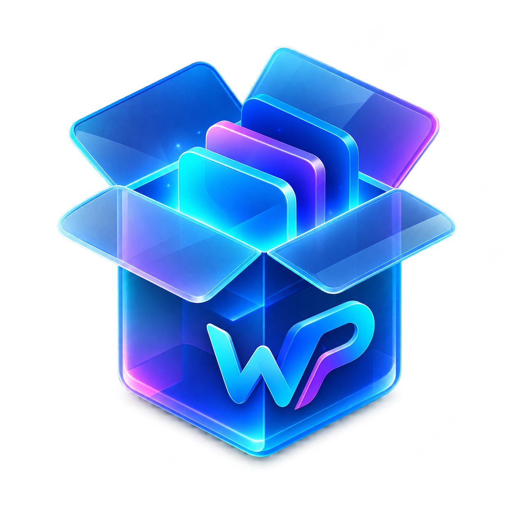

Catálogo de aplicativos
Encontre seus programas favoritos em uma experiência organizada e fácil de usar.

WinProvision StoreEncontre, instale e organize seus aplicativos em um só lugar. Simples para começar, completo quando você precisa.
O que você quer fazer hoje?
Uma central moderna para cuidar dos aplicativos e da preparação do seu computador.
Encontre seus programas favoritos em uma experiência organizada e fácil de usar.
Selecione vários aplicativos e configure seu ambiente de uma só vez.
Mantenha os aplicativos instalados sempre atualizados com o WinGet.
Salve sua seleção e restaure o mesmo conjunto quando precisar.
Prepare o Windows com configurações e ferramentas em um fluxo guiado.
Automatize a instalação e acompanhe cada etapa com clareza.
O fluxo foi pensado para ser direto, transparente e sem etapas desnecessárias.
Pesquise no catálogo e selecione tudo o que deseja instalar.
Salve sua seleção para repetir a configuração sempre que quiser.
O WinProvision executa as operações e mostra o progresso em tempo real.
Veja o projeto, acompanhe sua evolução e faça parte da próxima versão.